MAYBE THIS WORLD IS ANOTHER PLANET'S HELL
For what sin I have sinned in my previous life that I have been sent to this hell? I cannot make sense of anything, anymore. I must be living in actual hell! No other logic can explain all this absurd punishment I have been receiving for the last few years. Like an avalanche coming down a mountain, shit gets worse and worse. None of it feels real anymore. I feel like either the entire world gone insane or it is me who fell victim to insanity.
Who is messing up with the time constantly? Why everything is changing for worse with an increasing speed? I am sick of waking up to a whole different kind of hellscape each day. Who is to blame? Who is that son of a bitch turned the entire world into this shithole we live in? Maybe there is no one to blame and we are bunch of leaves floating around by the wind. So it happens that we got struck by a hurricane.
Here is the story
I grew up in a country that can be considered the center of the world, Turkey. We are located in the middle of everything. Turkey is a bridge that connects Europe to Asia. We are neighboring European and Middle Eastern countries at the same time. In the north, there is Black Sea, separating us from Russia, Ukraine, Crimea and some other countries. In the south, there is Mediterranean Sea, separating us from Africa. Whatever the crap happens in either Europe or Middle East, we get affected by it.
For centuries, so many civilizations has occupied the Anatolia. We have artifacts from Ancient Greece, Rome, Byzantine, Mesopotamian civilizations... There are remnants of cities that's been built tens of thousands of years ago, sitting beneath us. Those civilizations has possessed some of the biggest trade routes of the ancient times. Anatolia was pretty much the breeding ground of conflict throughout the history. The latest occupants of these lands happens to be my ancestors. Like many Central Asian people, there isn't much known about ancient Turkic history. It is just known that my ancestors came all the way from Central Asia. Like anything that's worth spilling blood over, conquering these lands comes with a curse impossible to break. Anatolia wouldn't see the death of so many civilizations otherwise.
Right after my nomadic ancestors settled here, they got assimilated by neighboring cultures. First we accepted the sedentary lifestyle then we became Muslims. We lost our traditions not long after. Every piece of our history and culture got bastardized. Our culture has turned into a weird amalgamation of the west and the east. We got mixed with people from all around the world. As a consequence we have one of the widest gene pools in the world. It got to a point that Ottoman Sultans didn't have a single drop of Turkic blood due to having so many Eastern European concubines. It wasn't only a cultural change, it was genetic as well.
One of the consequences of occupying these lands is that you will be fighting for it constantly. From Seljuk Empire to Ottomans, the Anatolian Turks were constantly fighting against neighboring nations either for defending what they have or for conquering more land. The biggest war these lands has ever seen must be the first world war. It was the finishing blow for "The Sick Man of Europe" as they called. It destroyed the centuries old Ottoman Empire. After so much bloodshed and the fight over freedom, the mother Anatolia gave birth to modern day Turkish Republic.
Can a single man change the world? I am not so sure about that but it so happens that a single man can change a whole country for sure. Our father, father of all Turks, Mustafa Kemal Atatürk has built a secular, democratic republic out of the ashes of a corrupt empire that's been feeding on its people for centuries. You cannot talk about Turkish history without mentioning Atatürk. Even his name literally means "Father Turk". This surname has given to him by the parliament.
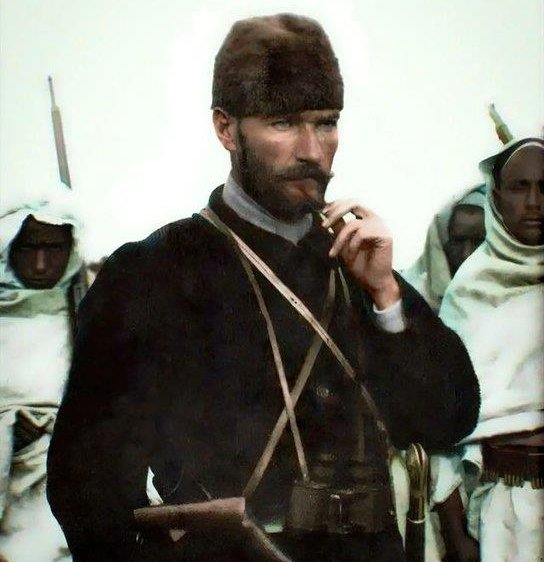You can see his face everywhere around this country. You can see statues of him in every school, every town hall and every government building. You can see his face on the currency, sometimes even on the flag. What you won't to see is, his ideologies being kept alive. Atatürk was a highly decorated soldier and a great politician. He was also a great teacher. Many consider that he resurrected the long forgotten nationalism in this country. His kind of nationalism was neither chauvinistic nor racist. People built this nation are considered Turks, no matter the ethnicity, no matter the religion. Thanks to this visionary man, this country had all the women's rights way before some European countries even allowed women to vote. He gave us democracy, at least tried. He industrialized the whole nation. From a dying sick empire struggling with civil wars, famines, plagues and being relative to a modern, progressive, secular republic that can keep up with rest of the world. Thanks to his revolutions, literacy rates jumped from 2% to 30% during his lifetime. But those who could not understand him only complain about him changing the alphabet from Arabic to Latin. "He destroyed our culture" they say like Turks meant to read and write in Arabic.
This brings us the modern day conflicts circling around him. Neither people who love him nor those who hate him with passion understand this man. If you try to learn anything about him you will come across nothing but lies. Be it a conservative or secularist, Muslim or a non-believer, right wing or the left, most people in this country have respect for him. There is a small minority however, the radical ones from both the left and the right, hate him for different reasons. Those who are sucking on Arabic dick hate him because they believe he destroyed the Islam. Those who want to destroy this country hate him for obvious reasons.
There are consequences of being located in the middle of all sorts of different cultures as well. Turkey is one of the most hated nations in the world for a reason. To the western world we are bunch of radicalized sand people roaming around the desert despite not having any deserts in our country. To the Middle Eastern society we are just bunch of infidels worthy of god's punishment. We are too secular for the east, too conservative for the west. Cultural conflict between different groups of people in this country is constantly tearing us apart.
Turkey is the epitome of oxymoron. Many of those self-righteous conservative Muslims in this country are deemed total heretics according to very own religion they worship. You can see people gambling, drinking alcohol, prostituting, committing adultery, lying, stealing but yet wanting sharia law only in this country. There are people who have never been in a mosque before begging for more mosques to be built. There are people who have spent majority of their lives fucking prostitutes, telling women not to wear indecent clothing. Biggest homosexuals in this country are also the most homophobic. Some even have very close relationships with our super conservative government.
Believe or not Turkey wasn't always a cesspool like this. Sure, never in our history we have had perfect politicians or a government except maybe earliest years of the republic but this country was much more tolerable not so long ago. Before 21st century, Turkey was at least 10 times more secular than United States. At least our government was. Maybe it was a little excessive even, because women working for the government or studying in college could not wear hijab. As a part of dress code. Our current leader used this to his benefits for many years. Why people using the word "freedom" all the time are always the ones trying to destroy it the most? President Erdoğan used the victim's mindset as a tool of propaganda by promising that he would ensure freedom for all. He only ensured freedom for his worshipers and destroyed it for the others.
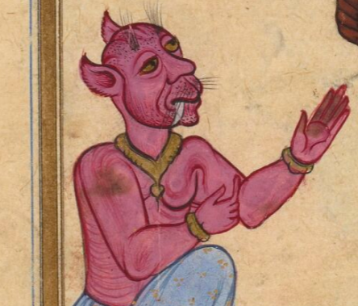The 2000s is the era when the downfall of this country has begun. Very ironically 2000s were also the years when Turkey had the most amount of economical growth in its history. It was one of the fastest growing economies in the world. We were getting showered with all sorts of investment. The success hasn't stopped there. Turkey and the prime minister Erdoğan was getting praised by the foreign media constantly. The support of the western world for the new government was simply incredible. We were winning Eurovision competitions year after year. We were getting millions of tourists from all around the world. Time magazine even praised Erdoğan for being "Pro-western, secular and democratic". Our currency was almost as valuable as USD. EU has even promised that Turkey would become a member by the year 2023 if our government meets the criteria. For many this new prime minister was some kind of a hero, for some even a prophet.
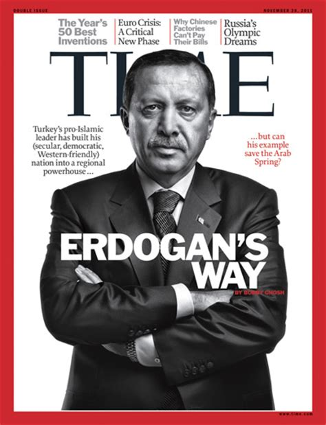Long story short, our economy was booming and our dictator was getting his dick sucked. But if you know anything about politics, western world doesn't groom dictators if they don't benefit from it. They were only helping our dictator grow in popularity because they were holding his leash. Despite how hostile Erdoğan is towards western nations nowadays, he was the most loyal asslicker world has ever seen back then. He had close relationships with president Bush. He even helped US troops cross the border and allowed USAF to use their military base located in Turkey during the invasion of Iraq.
We cannot talk about recent political history of Turkey without mentioning the name Fetullah Gülen. You either don't know anything about him or just heard the name a few times. He is the mastermind behind the destruction of our nation. He was also the perpetrator of the 2016 coup. All you hear about this guy and the coup on western media is a load of bullshit. Every single citizen of Turkey regardless of the political background all agree that he was responsible for the coup. You just had to be here to see what kind of asshole this guy was. I will explain why you probably never heard of this guy despite him literally owning the entire country at some point.
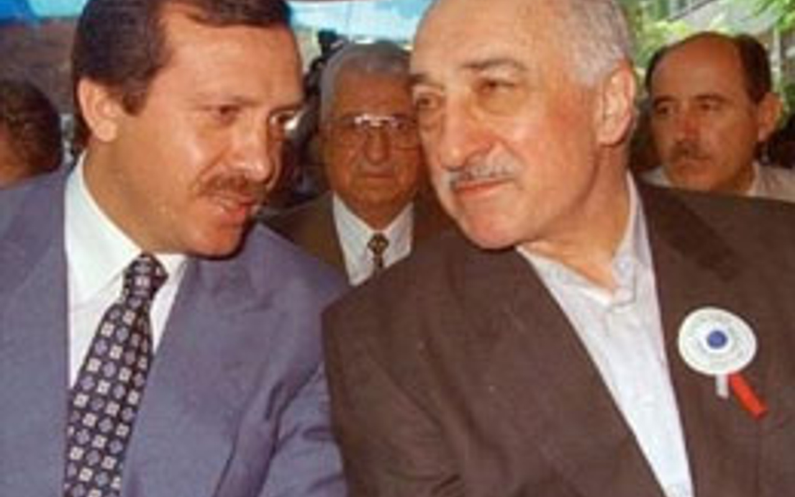Fetullah Gülen was the most powerful cult leader in Turkey. At some point he probably was the most powerful cult leader in the world as well. Explaining how far his hands could reach and how many strings he was pulling takes forever. His worshipers literally believed he is a messiah. I am not talking figuratively. His cult dates all the way back to 70s, maybe even earlier. We call them "Cemaat" or "Fetullahists". It was either late 80s or 90s when he really started to become a threat. He gained so many disciples during that time. It was probably 80s when he met with Recep Tayyip Erdoğan. He was nothing but a low life scum prior to joining Fetullah Gülen's cult. Back in the late 90s Gülen has been found guilty of "Trying to destroy secular nature of Turkish Republic" and escaped to United States. In the beginning of 2000s, Erdoğan has founded his own political party, AKP (Justice and Development Party). At that point he was the biggest worshiper of Fetullah Gülen. And Gülen financed most of his propaganda campaigns. Gülen is the only reason why Erdoğan was able to become a prime minister. How on earth a single nobody could gain this much power otherwise?
It all begins with Erdoğan's party taking over the Turkish Republic. It was a democratic election, sure. This is why I have no faith in democracy. Ever since he became the leader, he made himself and those who around him super rich. Fetullah Gülen was taking the biggest piece from the cake back then. Not long after they took over the political power, Gülen started planting his spineless worshipers into all parts of the government. All the judges, police officers, soldiers, college professors, teachers, doctors were working for him. He helped his disciples cheat on tests by giving them the answers so they could infiltrate the universities. He started his plans of occupying all the positions in government long before Erdoğan was a prime minister actually but back then he could only do so much without occupying the most important position.
Gülen started opening up schools all over the world. From Africa to Europe, every continent and maybe even every country had their fair share of his religious schools. He started brainwashing children into his ideologies. He wasn't only influential for Turkey, he was also influential for the entire Islamic society. His influence however was a harmful kind. They slowly started growing the span of this influence by persuading or even threatening people to join them. Those who spoke against them lost their jobs or even got jailed. He was practically untouchable. You couldn't do any business in this country without their permission, they would try their best to destroy your business.
Among all the crimes these cockroaches have committed against this country, one of them is particularly sinister. Back when they had the most amount of power and were ruling the entire country singlehandedly, they decided to remove the biggest threat for their existence. The army. Turkey has a long history of coups. Whenever a politician crossed the line or civil unrest has peaked, the army took over the government. Almost all of them resulted in executions of some political figures. We don't have death penalty anymore mainly because of that reason. Gülen and his kind of people always feared from the army because high ranking soldiers were always loyal to Atatürk and his republic. The radical Islamists on the other hand, tried to erase his name from existence. Because of that reason army had to be dealt with.
To achieve that, they came up with a slander. They fabricated bunch of documents indicating that 270 generals are members of a terrorist group and they are planning a coup. The made up name they gave to this so called terrorist organization was "Ergenekon". Ergenekon is the oldest myth belongs to ancient Turkic people. And since these cocksuckers wanted to destroy everything related to pre-Islamic Turks, they were planning to kill two birds with one stone. Ergenekon never existed and all the documents they made up were obvious bullshit. No kind of government would take such suspicions seriously but our prime minister was nothing but a puppet of that cult leader. They started judging these army generals and most of them got convicted. They replaced those patriotic soldiers with the spineless asslickers who were gonna commit an actual coup not long after all this. This was probably the biggest treason against the Turkish Republic in history.
It doesn't end here though. During the trials they started investigating all the archives including the deepest government secrets. Some of those documents that has been investigated contained very critical data belonged to intelligence agencies. Later we learned that most of them has been leaked to US intelligence agencies. All of the anonymous witnesses of these trials later been identified. As you might guess majority of them were cult members, literal terrorists and some mafia bosses. Back in 2019 they released convicted army generals after finally realizing that it was all a slander but it was too late. Many of these soldiers took their own lives, some died because of poor treatment they have received.
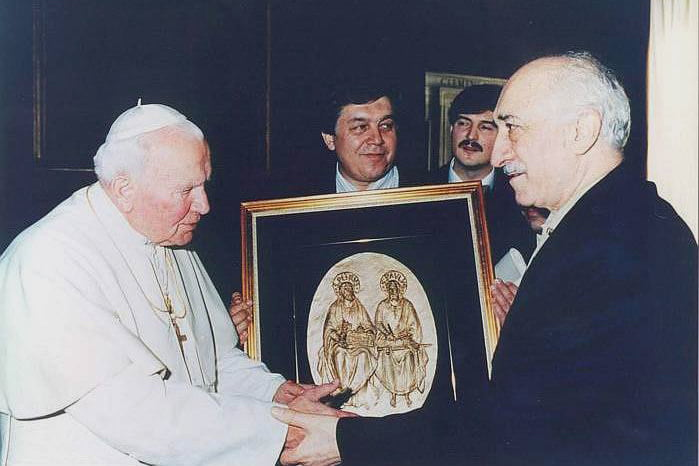
How convenient is that this man, Fetullah Gülen started saying really nice things about Christians and Jews as well as US government not long after they opened their arms to him. He is currently residing in Pennsylvania. As far as I can see he has really close relationships with US politicians and even other religious leaders such as the Pope himself. I am not saying that he was a CIA puppet but he was a CIA puppet. Still is. Just like I said, not long after they seized the government, western world started showering this country with all sorts of investment and financial aid. Erdoğan was getting his dick sucked by the western media not so long ago. He was never that "Secular, democratic, western-friendly leader" they deemed. They cannot be that stupid or ignorant. Their sympathy for our dictator was purposeful.
I have no such words to explain how useful this guy was for the US government. His influence over Islamic world could be very beneficial and his tyranny over the Turkish Republic have been heavily exploited to serve for political gains of US and Europe. Their investment was really fruitful for some time. One of the examples of this was the so called "Peace process with the Kurdish people".
You probably never heard of the terrorist organization called PKK (Kurdish Worker's Party). That's because they never use that name on the western media, they simply call them "The Kurds" despite majority of Kurdish people standing against these terrorists. They have a long history. Ever since late 80s they killed tens of thousands of people including civilians. Throughout the 90s they killed dozens of primary school teachers working in the Eastern Anatolia just because they didn't want formal education to get in the way of their indoctrination. PKK is simply a communist guerilla group that's been built for one purpose. Taking over the significant portion of Eastern Turkey and creating an autonomous land over there. Their propaganda includes spewing bunch of lies about how government mistreated the Kurdish people throughout the history. They outright killed those who left the organization and blamed it on Turkish army in the past. People still buy their bullshit regardless.
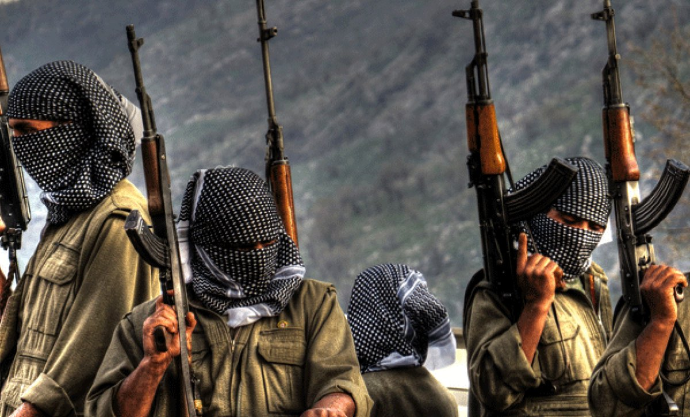They bombed the hell out of large cities, burned down public transport which in one incident a pregnant women has burnt to death inside a bus, they blocked the highways and killed many officers working for the government, they massacred plenty of villages and killed everyone including children, they attacked military bases with suicide bombers and many other atrocious crimes. Great portion of their victims were also Kurdish people. If locals refused to cooperate, they have been killed. 90s were some rough years for this country but at the end of it, it was mostly over. Their leader got caught and sent to prison and remaining terrorists were mostly hiding in Northern Iraq. Until Erdoğan became the prime minister.
Out of nowhere they decided to make peace with these terrorists. First they pardoned all of them then they opened up the borders to accept those who were hiding in Northern Iraq. They literally let them in without even judging them in court. These so called "Peace efforts" were another reason why western world started praising the hell out of Erdoğan. It was one of the prerequisites of Turkey's acceptance to EU. Of course Turkey being a part pf EU was never the plan, just another marketing campaign. The ultimate goal of this hassle was to build an autonomous state in the eastern Anatolia. Pretty much like Iraqi Kurdistan. Turkey is the first country legally recognized their existence by the way. So, all those stories about Erdoğan mistreating Kurdish people is a load of bullshit. They only started saying that after he became no longer useful. There are some incidents of smugglers getting killed after trying to cross the border. And guess who was responsible for that? Their killings been ordered by the Fetullah Gülen's cult. So that it could be used for propaganda.
All of this nonsense has ended after the imprisoned leader of PKK, Abdullah Öcalan started demanding outlandish things from the government. This is what happens if you treat terrorists like human beings. They get spoiled very easily. While all this was happening, I was living in Eastern Anatolia and saw them parade the terrorist with my own eyes. I have experienced all forms of discrimination while I was living there. I guess being a Turk in Turkey is not acceptable anymore. We were living in constant fear back then. Some places I used to visit got bombed to the ground with suicide bombers after we moved from there. Our house got marked with red paint because my father is a soldier. I don't know who did that and what they were planning is beyond me but getting your door marked by a stranger is one of the creepiest things you can experience I can assure. During the first week I have spent there I have seen people throwing molotov cocktails at the police. I got tear gassed by accident so many times.
Ever since Erdoğan became a prime minister we were getting fucked in the ass as a country. After the unavoidable death of democracy he gained more power than ottoman sultans even. Our new presidency system made him untouchable. Even if you raised your voice against him, you would face imprisonment. Calling him a dictator ironically would put you in trouble. It's like a king punishing his people for being called a king. He can pass whatever laws he want, he can punish whoever he wants, he can steal as much money as he wants from the treasury which he had done many times. And yet, he won't stop uttering the word "democracy" every single time he gives a speech.
In many ways Erdoğan is the antagonist of Atatürk. Atatürk was a dictator for sure, we never had anything like democracy in our history prior to Turkish Republic. Atatürk used his tyrannical powers to bring democracy, Erdoğan used his democratic powers to bring tyranny. This is the difference between a good dictator and an evil one. Our government tried its best to erase Atatürk's name from existence by spreading most disgusting forms of slander. They called him an illegitimate child, they called him a jew like it is something to be ashamed of, they called him an alcoholic, they literally said he was a British spy despite him winning many wars against the Brits. Doesn't matter that all of them was a load of bullshit, their braindead followers ate them all up.
There are certain things in life constantly reminds you what kind of shithole you live in. For the last 20 years we were losing bits and pieces of our freedom. As a result we have no kind of freedom to lose anymore. Our mighty government controls every aspect of our lives. First thing Erdoğan had done when he became our leader was to censor the TV channels and the media. Pre-2000s TV in Turkey was totally unhinged. If you wonder what would happen if TV channels had no control you should take a look at 80s and 90s Turkish TV. Those were the most colorful years for sure. Nowadays TV is nothing but a tool of propaganda. Right after this TV censorship, internet censorship followed. I remember the days when Youtube was blocked. Other social media sites got their fair share of censorship not long after. I guess at this point Twitter got blocked and opened again 12-15 times before. In every major event our government blocks the whole social media so that people won't be able to learn what is happening. They cover their assess by doing that.
And you better watch your mouth if you don't want to get sued for talking shit about government. They might even claim that you are a terrorist for vocalizing your discomfort. If you do not believe everything in this country is perfect, you are either a terrorist or a spy. And do not think that any form of parody or figurative speech won't be taken seriously. Even if they sense that you are remotely cynical, you will get sued. These eyes have seen a 15yo getting arrested for criticizing the government. Even being an infant won't save you. I am waiting for the day they will start arresting toddlers.
Many journalists has been arrested since the beginning of this tyranny. They completely took over the media. 80% of the media corporations are licking his ass. It is possible to see them talking about how entire world is jealous of our leader every single day. I just wish you could see how fucked up things really are. I cannot stand staring at TV for more than 5 minutes. It literally gives me severe headache. How it is possible that every single thing they say is a total lie? At this point our media is the equivalent of Russian, Chinese and North Korean media.
They started squeezing out as much money as they can from their citizens as well. In the beginning of the century they brought so many new forms of taxes. Nowadays they take almost %400 tax from motorized vehicles if they have engine displacement bigger than 1.6L. It was not enough though, we have a tax called "Special Consumption Tax". This tax is added on top of all other taxes and they take this tax from certain items that's considered "luxury". Do you know what is considered luxury? From cars and motorcycles to carbonated beverages. Basically anything other than most basic food items. And do not even think about importing stuff from foreign countries. They will fuck you up so bad that you are gonna wish you were an actual drug smuggler. All the difficulty of importing stuff aside, you will pay ridiculous amount of taxes and the value of whatever you were buying will be determined by the government. If government decides that whatever you buy costs 5k you will pay 5k equivalent of taxes. If you import stuff in bulk, they will ask you to build an import-export company so they can tax you properly. We simply drive the most expensive cars in the world, we use most expensive Iphones and Macbooks, we buy the most expensive electronics and yet people keep sucking the dicks of those thieves who are responsible for all this.
Atatürk once said "The Republic of Turkey cannot be a country of sheikhs, dervishes, and disciples. The truest, most real order is the order of civilization". Unfortunately, today his heritage became a toy in the hands of Islamic cults. To say that Erdoğan's government favored all those Islamic cults is an understatement. Erdoğan himself is a product of an Islamic cult after all. People of Turkish Republic constantly get fucked in the ass by cult leaders, sometimes literally. These cockroaches been devouring this nation for many years. Even before 21st century, these low life monkeys has murdered so many intellectuals because they were not some mindless worshipers sucking on their sheikh's dick. In today's Turkey, they can get away with all sorts of crimes they have been committing for the last 20 years.
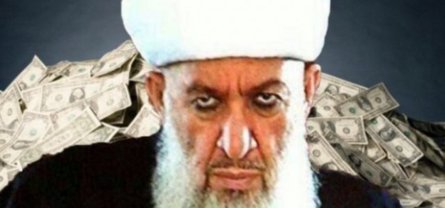At some point in history, religious cults were totally outlawed. You will understand why it was such a great decision. You first need to understand how these cults actually work. Many of these cults in Turkey has evolved into a religion on their own pretty much like their Christian counterparts in America. They possess more power than they should. Their disciples are totally devoted to their sheikhs or imams. So much so that, they see them as literal prophets or even a sort of deity. One particular cult even believes that their leader is even greater than the Allah. You can see their mindless worshipers barking like a dog in front of their sheikhs, you can see them going apeshit during their prayers and doing lots of unintelligible things, you can even hear stories about how they are drinking their sheikh's piss.
A lot of these cults have their own boarding schools. These schools are used for the most intense form of brainwashing. Once a young mind falls victim to them, they will lose all their ties with the outer world. They won't let you use cellphones, they won't let you watch TV, they won't allow you to speak anyone outside of the cult. Kids that's been abducted by these cults won't receive any formal education either. They will deprive you from most of your basic needs. The brainwashing is so severe that it can cause schizophrenia.
Any kind of religious cult cannot be imagined without sexual abuse, especially against minors. Our cults are infamous for all sorts of child abuse. Very recently a high ranking cult member got arrested for getting married with a 6yo. Since we don't have any justice in this country, I am not sure for how long this pedophile will stay there. In many of these religious boarding schools, kids get sexually abused either by other cult members or the cult leaders themselves. There are countless examples of young people taking their own lives because of the sexual and physical abuse.
Aside from sexual abuse, there is the psychological torture many people have to endure. We have a huge problem with college dorms that are being ran by these cults. Since government dorms are overcrowded, most students don't have any chance but staying there. And you bet your ass you will be forced to worship. They won't even allow you to study. You will be asked to eat ass. You will be asked to donate your money. You will be asked to listen to their propaganda. Again, very recently a medicine student committed suicide because he could not take it anymore.
Many of these cults are so perverted that their sheikhs will literally fuck their worshipers, their worshipers' wives and other family members for sake of "blessing" them. And the most tragic part is, most of these cults are practically untouchable thanks to their ties with the government. Government will even allow them to preach in public schools. In one incident, a teacher of sort got arrested for molesting more than 40 children aging between 7-16. First thing our dictator had done was defending this cult and calling it an isolated incident. The same cult still receives financial help from the government. Our tax money is literally feeding pedophiles.
There isn't a single thing in this country that hasn't been ruined by the Erdoğan's government. Education is one of them. Back when Fetullah Gülen and his cult was feeding on this country, they imprisoned so many professors for the stupidest reasons, so that they could replace them with their spineless worshipers. Just like they did with the army. They changed the education system so many times. They bastardized it so bad that, kids today doesn't learn a single piece of true information. They firstly removed evolution from the biology curriculum. Then they removed certain classes such as geology and geography. They replaced them with religious classes. They have opened up so many religious schools as well. Every piece of foundation related to science and education have been handed to braindead retards with religious backgrounds. As a result, a whole generation of people turned into uneducated, retarded, degenerate bastards. Most people in this country doesn't know anything about about their own history. They barely can speak their own language.
Believe or not, these lands used to have so many natural beauties beyond imagination prior to getting destroyed. They have ruined many of these beauties in order to put concrete on top of concrete. Construction is a booming business in this country and many construction companies are sucking on the tits of government. As a result so many of the preserved lands and agricultural areas has been turned into concrete hell. So many rare geological wonders have been destroyed for profit. So many forests has been burnt to the ground so they can be replaced by man made abominations. So many lakes has dried up. So many water sources are gone due to drought.
All the historical artifacts that were able to stand the test of time for centuries has been ruined in a couple decades. The curse of these lands still persist to this day. We have had so many gorgeous looking castles, monasteries, churches, mosques, ancient theaters. Most either has been ruined in the name of "restoration" or has been totally destroyed. In no other country you can see something as stupid as building a glass ceiling on top of a historically significant palace. In no other country you can see something as stupid as a museum being turned into a mosque. In no other country you can see ancient mesopotamian artifacts getting blown up by dynamite in order to build a dam. Only in a middle eastern shithole. Funny thing is, shitbrained bastards committing these crimes against our culture are complaining about not being able to read the tombstones of their ancestors due to Atatürk changing our alphabet to Latin alphabet. But they are okay with shitting on the graves of those same ancestors.
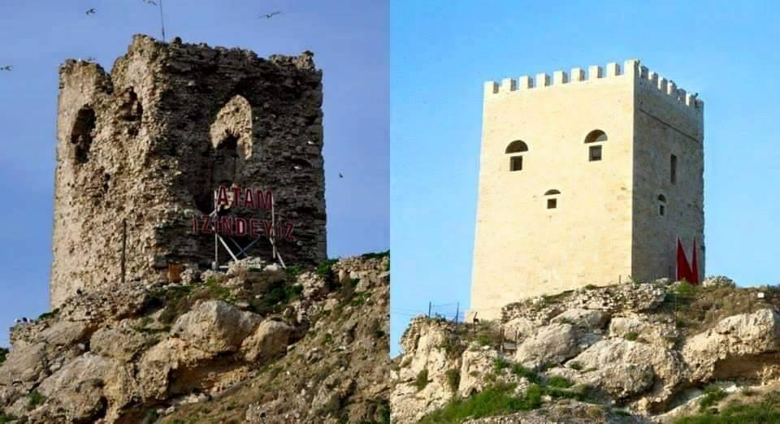 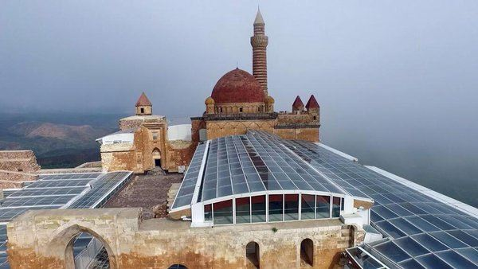You probably start to think that for how long people need to get fucked until they open their eyes. I talked about how Erdoğan was backed by the western nations but trust me I don't blame anyone but my people for everything that has happened to us. Maybe being bunch of shameless whores is in the blood. There are many cocksuckers in this country who would gladly hand their wives and daughters to president Erdoğan. Some even say that openly. These are the same people boasting about dignity and integrity. Yet, none of them have any problems with sucking the dicks of very own traitors that has completely destroyed all our values. Mankind are weird kind of animals indeed.
You need to understand the psyche of lower class to make any sense of this. For many years, lower class of this country has been pushed around because of their ignorance and stupidity. Their voices could not be heard due their inferiority complex. Being ignorant was something to be ashamed of back then. Only type of people you could see being represented on TV were the middle class people. Those who were educated and could speak very well. On top of that, old fashioned values and virtues of the lower class remaining from the stone age was getting mocked. Their retrograde way of thinking had no place in a modern world. Politicians were nothing but aliens to them. They all spoke big fancy words they could not understand. They wanted someone to represent them in the field of politics.
That someone was the marketing face of this country's destruction, Recep Tayyip Erdoğan. He had a massive PR team making him look and sound the way that appeals to common everyday folks. He was always talking about how he did not possess any wealth and how he is one of the them. The religious values of the people had to be exploited as well. So many times he gave speech in front of people, holding the Qur'an. His PR team was constantly pushing the idea of his political party being the only Islamic party. They painted him as a sympathetic young man who is worried about his people. He was constantly vocalizing the problems of this country with poverty. He promised people that they will raise a religious generation. Ironically they have raised a nihilistic generation by making the youth of this country very hateful of everything they defend.
Not long after he came into power, they started praising the ignorance and pointing their fingers at the upper middle class. They needed to find an enemy to fuel the hatred. They have called this enemy "White Turks". Very idiotic term to describe the upper middle class. People in this country doesn't differentiate by the color and there are no "White Turks". Since majority of the population are the lower class, the middle class could just be ignored. These elite group of people looking down on common everyday folks had to be demonized. They outright said that educated people are the root of every problem in this country. Sounds like some shit you could only read in George Orwell novels but Turkey is not a fictional land. They outright spread lies about how these elite Atatürkist people victimized the poor conservative folks just because they wanted religious freedom. To fuel the hatred even more, they produced so many propaganda movies and TV shows where the bad guy was always a secular Atatürkist picking up on poor lower class conservative people. They were so good at their job, even those same upper middle class dissidents they were trying to smear started to believe it.
After the masks fell off, the same generous, sympathetic, politician of your family has turned into a tyrannical monster feeding on people of his country. The same guy who once said that he doesn't possess any wealth is now living in a palace built by our own tax money.
For many, breaking point of recent Turkish history was the 2016 coup. But in reality it started way earlier. Some people could even see it coming. I already said that Fetullah Gülen was the mastermind behind the fall of this nation. Erdoğan owes him everything. But it so happened that relationship between these two political figures has worsened over the years. Power is the most addictive type of drug. Power high becomes the most irresistible type of high once you get a taste of it. I don't know exactly what happened between these two but I assume that Erdoğan just couldn't stand the fact that he was nothing but a puppet. He wanted to get rid of Gülen and his cult. This wasn't an easy task because many of his worshipers were also Fetullah Gülen's worshipers. After the tides have turned, many of them picked their sides.
It all started in 2013 if I am not wrong. Suddenly this godsend cleric who is determined to "bring back the Islam" has became a terrorist. Doesn't matter that they all sucked his dick for so many years, the media turned their heads against him. All of his castles were falling down, one by one. Many of his disciples got arrested. Desperate times call for desperate measures. Just before government started to investigate the soldiers, they have committed a coup. But not all soldiers were loyal to him thankfully. He could only use small portion of army's resources. Their plan was failed from the beginning.
I still remember the day it all happened. It was the evening and I was watching TV up until we got a call from my dad. He was telling us to stay inside. On the TV there was a reporter woman reading a declaration. It was about a group of people taking over the government. They called themselves "Peace in the homeland committee". This comes from a famous quote of Atatürk, "Peace at Home, Peace in the World". They also identified themselves as a group of Atatürkist soldiers. Despite this old fart trying to destroy his name for many years, he was hiding behind Atatürk's name in the last ditch effort of taking over this country. Even an earthworm has more spine than these people.
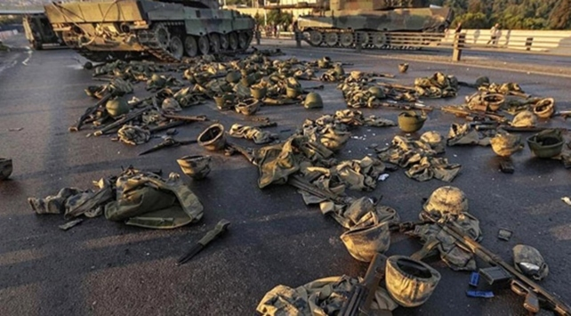I watched our parliament building getting bombed to the ground by fighter jets, I have watched tanks roaming around the capital city, I have watched perpetrators bombing the police stations. While all that was happening our supreme leader was about to escape. His car was moving towards the airport. He called the TV channels during the live broadcast and asked for people to defend the homeland. Soon after this, people started filling the streets. After the sunrise, everything was pretty much over. All the soldiers attempting the coup got caught and punished, some paid the price with their lives. Low ranking soldiers didn't know what the hell even happened paid the biggest price. They were just following the orders.
After everything calmed down a bit, they started arresting all of the Gülen followers. What a coincidence that government could identify all of them like they were the ones who gave them all of their titles and jobs. From judges to soldiers, teachers to doctors, all those who were devout worshipers of Fetullah Gülen got arrested and punished with the highest sentence they could get. Later they said that most of these people got their jobs by cheating. Saying that people are getting jobs they don't deserve due to corruption could result in getting called a traitor not so long ago. How ironic. Lots and lots of people who got arrested had nothing to do with Fetullah Gülen as well. If you had any material related to Gülen cult, either one of his books or the newspapers he owned, you were in some deep shit. Those who were the biggest asslickers though, got away with it because they were loyal enough to Erdoğan.
When it comes to the our supreme leader, he declared himself a hero. So as his worshipers. Despite attempting to escape like a rat and calling people to save his ass. Despite him being the most devout Gülen worshiper himself not so long ago. Despite being responsible for all the corruption resulted in Fetullah Gülen taking over a huge chunk of the army as well as the whole damn country. He got many more followers after all this. He used this coup as a tool of propaganda and started accusing people for being Fetullahists. Can you comprehend what kind of mental asylum this whole country is?
It didn't take much long to replace Fettulahists with other kinds of bootlickers. Nothing has changed. They kept corrupting the hell out of this country. All the positions in the government are possessed by Erdoğan worshipers and their family members. Not a single one of them is competent enough for their jobs. They kept their old practices. All the tests and job interviews are still fixed and only those who can suck enough dicks are accepted. They still help their worshipers pass the exams and tests by giving them the answers. The army is now full of Erdoğan worshipers instead of those who were loyal to Fetullah Gülen.
Not so long ago Erdoğan's government was shitting on all forms of nationalism. Now they suddenly turned into most fierce nationalists, very ironically. The same kind of people who were cheering for terrorist being released in the name of "peace" are now accusing people of being PKK members. Erdoğan went even a step further and suddenly started praising the Atatürk despite how he was shitting on him for many years. It's all in the name of getting votes. When it comes to religious cults, it didn't take long to find a replacement for Gülen's cult. All their boarding schools and student dorms have been taken away from them and given to all sorts of other cults.
They turned the whole government into a family business. Erdoğan's son in law once was our minster of finance. That cocksucker has escaped to France after ruining the economy. Many of the congresspeople started hiring their friends and relatives. A single congressman has at least 3 consultants and most of them are the closest friends and relatives of those congressmen. It takes a whole army of people to rule this country yet we are still not moving anywhere. Maybe that's because we live in a dictatorship and the choice is nothing but an illusion.
It was the Erdoğan's son in law, Berat Albayrak who started ruining the economy with his retarded policies. Not long after he was gone, they replaced him with another bootlicker. They needed someone to blame so they kept firing minsters and hiring even more incompetent ministers. The Central Bank of Turkish Republic has totally lost their autonomy. They fired their manager and replaced him with a puppet. They took control over the entire financial system. But when they screwed everything up, they accepted none of the responsibility.
It was not long ago when Erdoğan said "I am an economist". He can be anything he wants since he doesn't have an actual college degree. He shouldn't even be elected as a prime minister by the law because of that but as I said so many times, he got backed by some really powerful people. And since this delusional cunt believed that he could fix the economy, he lowered the interest rates while we were dealing with some serious inflation despite common sense saying that you should do the opposite. We are the only country in the world doing something as stupid as this. It is all in the name of "Muh religion". This action resulted in banks making a lot more money then they used to make despite what most idiots in this country thinks. Those interest rates are not the same interest rates that's been taken from you if you had loans.
At this stage we are dealing with hyperinflation despite government saying that inflation is nothing more than 80%. They are altering the numbers. They even made it illegal for people to talk about inflation rates. You cannot say that "The real inflation is a lot more than 100%" without getting in trouble. Those who cannot tolerate free speech are always the biggest cowards. They are very scared. Most people in this country hate them with passion. Their chances of winning another election is slim to none. Even if by a miracle it happens, it will totally destroy this country.
What happens if you start losing all your votes and become the most hated man in the whole country? It so happens that you can import votes from other countries. There are currently 13 million refugees in this country. Most are from Syria and Afghanistan. More than 3 million of these got citizenship over the last 10 years despite government saying that they are not here permanently at first. Now our dictator says that they will stay here because they are our Muslim brothers. Right after the war in Ukraine we also got hundreds of thousands of Russian and Ukrainian refugees, because why not? Turkey is the dumping ground of all kinds of third world refugees after all.
Not long after our Muslim brothers came here, they started committing all sorts of crimes. From stealing to sexual assault. Wherever you go, you see nothing but these sand monkeys. So many places in Turkey are full of Arabic signs. It is not enough that our government pay these refugees a monthly salary for coming here and sexually assaulting our women and children, we must also put Arabic signs and landmarks everywhere.
You might say that "How can you be so racist, these poor people are victims of war". Believe or not most of the Syrians living in this country travel across the border and visit their homeland every single year. If their lives are in danger, how the hell such thing can happen? And most of these cocksuckers live better lives than most of the lower class citizens of Turkey. Being a refugee in this country grants you more rights than being a citizen. They get free healthcare, a salary, free housing, free education and even citizenship if they worship the government. Most of the universities has a quota for refugees and they don't even need to pass the test. If you are a citizen you need to work your ass off for college education, if you are a refugee, it is effortless.
How they pay off this hospitality you ask? By acting like bunch of uncivilized monkeys. Wherever you go, you see hundreds of refugees roaming around, leaving their trash behind, bothering people and outright starting fights. Nowadays they started ganging up on people. There are lots and lots of armed gangs consisting of refugees. Some of these cockroaches, specially the ones coming from Afghanistan are jihadists. Most of the Afghan refugees are Taliban members. It is hard to understand these jihadist cocksuckers. You are leaving your shithole country for a civilized nation, you want to turn that civilized nation into the same shithole you came from. Why don't you just fuck off to whatever shithole you came from?
It was last year when a terrorist attack in the middle of Istanbul has occurred. The perpetrator was a Syrian women. Of course, first thing government has done was censoring the media so that we cannot know what the hell is happening. No TV channels has mentioned this for the first 12 hours or so. They also blocked the social media. We still don't know what was the motive behind all this. And what they did to prevent something like this from happening ever again? Removing the bench seats from the street where this bombing has happened. While this was happening, our mister of the interior was participating in an opening in Syria. What a fucking joke.
What our government is doing to solve this refugee problem? Nothing. You will get called racist, xenophopic or even a terrorist if you say that you don't want refugees in this country. They will outright say that "All the separatist terrorists in this country doesn't want refugees". Very ironically it is quite the opposite. Those separatist groups literally want refugees to stay in this country so that they can take advantage of a civil war that might happen in the near future.
There are lots and lots of media corporations spreading refugee propaganda started popping up like mushrooms in the last 5 years. Almost all of them are funded by Europe. They all tell you stories about poor Syrian refugees not being treated well but none of them talk about all those crimes they have been committing. A couple years ago, a 2yo baby got raped by one of these monkeys. Most of the media corporations either didn't talk about it or they didn't mention his nationality. Why they are funding these newly built media corporations and youtube channels you might ask. Because all-mighty Europeans, saviors of the third world, doesn't want these monkeys in their homeland either but they will call you a racist if you refuse to keep them in your country. They only accept blue eyed, blonde haired Slavic refugees and they don't feel shy to say that they are nothing like those middle easterners. They paid 3 billion dollars to our government so that we can keep the unwanted refugees here. Our government spent more than 70 billion dollars for them in total. It all was an investment for the upcoming elections.
Perhaps there isn't any kind of power that is more destructive than the nature itself. You would think that wrath of the mother earth can curb the arrogance of mankind but we are too blind to take any lessons. We don't learn even when nature topples our empire of concrete. Our collective memory resembles an old man with dementia. I cannot believe how quickly people forget everything.
Another curse of these lands is being the most seismically active place on earth. The earth tries to kill you, if you dare to live here. I have experienced more than 4 earthquakes over 7 magnitude in my entire life. Any kind of earthquake can be quite scary but an earthquake over 7 magnitude is quite a spectacle. Everything around you starts to squeak and shake. You live through the longest minutes of your life. Things start falling off the shelves, lights go out, people start screaming, you lose your balance so bad you cannot even walk. It is impossible to describe that desperation. You just sit down and wait to see if the earth will swallow you as whole.
Most of the time after an earthquake that big, many smaller earthquakes follow. Ground keeps shaking for several months, sometimes 100 times a day. If it doesn't give you the anxiety of your life, you must be the calmest person on earth. I have been through it so many times and you never get used to it. You won't be able to sleep for several days. You will feel like shaking all the time. Sometimes it is hard to tell if ground is shaking or is it just your brain playing one of its dirty tricks on you.
It was 1999, I was too young to remember. We got hit by an earthquake that killed more than 40.000 people. Most of those buildings that got destroyed were not built properly. They all crumbled like biscuits. Everything has turned to dust in matter of minutes. This was the biggest natural disaster in our history. It wasn't the first one, it wasn't even the biggest earthquake but it was the one that killed the most amount of people in our recent history. People all talked about it for several years then they totally forgot about it. We got all sorts of new regulations for the construction industry. Those who were responsible for building the 10 story graveyards all got away with it. And none of those regulations prevented greedy bastards from building improper houses. Government didn't give a damn about inspecting the buildings either.
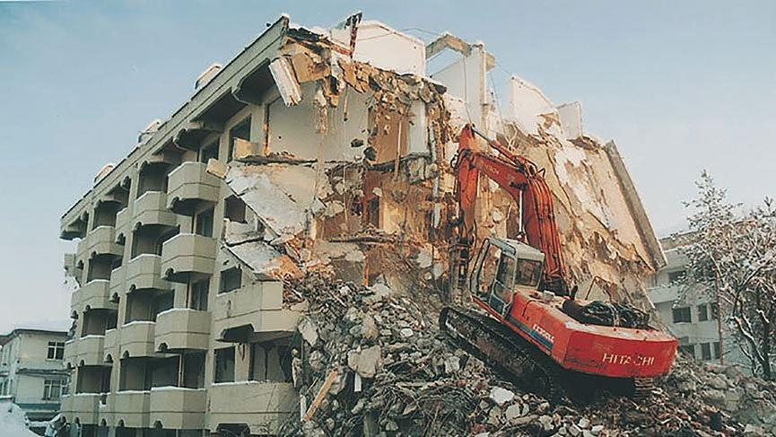Then we got hit by several other earthquakes that were almost as big, years later. It is the same story every single time. People lose their lives under the rubble, we talk about it for a while, nobody gets punished for building those concrete death traps, government tries to find someone to blame, we all forget about it. And the most ironic of all, we have been warned about these earthquakes years before they all happened, thanks to scientists. Government did not even bother funding the research for seismic faults sitting beneath us. Now we have a proper map of all those faults. Nobody can predict when exactly these earthquakes will happen but they can say if they will happen and if they will happen soon or not.
I was sleeping when we got hit by a M7.8 earthquake. It was the scariest moment of my life by far. It was shaking so bad, I fell off my bed. After it stopped, I was relieved. It was the afternoon when I tried to get some sleep for the second time. And right at that moment, we got hit by another big earthquake. It was a M7.5. Mother earth has no remorse indeed. Maybe we are getting punished for disrespecting her, challenging her and for being unimaginably stupid. This earthquake was about to happen, we all knew this. Scientists have warned us. Yet, our mighty government didn't give a crap about preparing for such disaster. Nobody could know that it was gonna be even worse than we imagined, but shit could be a lot less fucky if they simply could pull their heads off their asses. Would you believe if I said that a couple years ago government has pardoned all those who built illegal structures? If you built a second story for your house without a permit, you could simply get away with it thanks to our government. They even marketed this on TV. Not only that, just before the elections they also pardoned all sorts of criminals. All of the murderers, rapists and thieves got released. Turkey is the only country where government breaks the law to gain support of people. These vultures is the only reason we lost more than 50.000 people to this earthquake if you believe the official numbers. The real numbers are probably something like 150.000.
You cannot simply imagine the shitshow that happened after all this. Everything bad could happen has happened. It doesn't help that we are being ruled by bunch of cannibals either. At the first 20 hours or so, government couldn't simply send help to majority of those provinces that got affected by the earthquake but they simply lied about it. They said that their rescue teams have arrived to all those cities, towns and villages, which was a lie. There are many organizations to manage this kind of disaster in Turkey. Main one is called "Disaster and Emergency Management Presidency" or simply "AFAD". This one has been built by the government itself. Right after they destroyed many of the great charity organizations to squeeze out more money out of them. We also have an organization called "Red Crescent". It is the equivalent of Red Cross. It was suppose to be an independent organization prior to their manager getting replaced by a cocksucker. In prior earthquakes, this organization have handed great portion of charity money to Islamic cults. In this earthquake they started selling supplies and tents to other charity organizations instead of delivering them to people in need. There are also rumors about them selling blood that's been donated to them. You cannot believe the amount of corruption.
What people got after they started complaining about the help they haven't received for several days? They have been called "Ignoble scoundrels" by the president and other government officials. They simply lied to our faces by saying that they are doing their best to help people. 12 days after the earthquake there were some places that didn't receive any help at all. People from all around the country has came together to help people but they were far from being organized and they could only do so much. Rescue teams from all around the world also came for help but the kind of treatment they faced with cannot be put into words. For the first several days, they kept these foreign rescue teams on hold. They made them wait at the airports for days. During the most critical moments of the disaster.
I grew another kind of hatred for mankind after all the shit I have seen. While volunteers and foreign rescue teams were saving people under the rubble, the government backed organizations, mainly AFAD were shooing them right at the moment they save someone, just to pose in front of cameras. There was even a first responder who took a selfie video with an earthquake victim child on his arms, just for those sweet social media credits. That little child has died because of the improper treatment. You cannot understand the span of my hatred for attention whores. Tons and tons of attention craving thots on social media started spreading misinformation right after the disaster. I just wish I would go blind and deaf just not to see this kind of degeneracy. We have even seen degenerate zoomer cumstains making fun of the victims. There was an onlyfans bitch claiming that she would donate all of her earnings to charity just as a marketing strategy.
Would you believe that so many people trapped under the rubble were tweeting for help? Volunteers managed to save so many people by just looking through those tweets. So many people filmed and shared their last moments through social media. Quite a surreal scene. What our government has done to help those people you ask? They blocked the Twitter because people were raising too much complaint. It was not enough that they didn't do jack shit to help people, they also prevented volunteers from helping.
While there were people still waiting for a rescue, they started rescuing valuable items instead. There are rumors about people making rescue teams go after their valuables at gunpoint. They also wanted to get it over with as soon as possible. So they stopped the rescue way earlier than they should, while there were hundreds maybe thousands of alive people buried under the rubble. Most of those people got crushed under the bulldozers. Many of the foreign rescue teams has left because they didn't want to be a part of this crime.
While thousands of people were suffocating or freezing to death under the buildings, millions of refugees who infested this country started looting and stealing. Armed gangs started stopping aid trucks and robbing them. There are cases where they called volunteers on the phone and robbed them after they fell for their insidious traps. They even robbed the equipment that was being used by the rescue teams. Luckily though, some of them got caught and beaten by the angry mob. I have never enjoyed watching someone getting beaten to death this much before. These ungrateful cockroaches were the first ones who backstabbed our people. They won't stop marketing them as our "Muslim brothers" even after all this crap.
While all that was happening, the media was busy sucking the government's dick. They never showed any of those looters on camera, they did not even mention it. If people started to complain about the lack of help, they cut the broadcast. They never showed those places that hasn't received any help. They kept sucking the government's dick by mentioning how "hard" our government works to save people. You turn on the TV to see what the crap is going on but you end up listening to a spineless cocksucker talking about how comfy are those tents our government has provided to the victims, for several hours. There are a few TV channels mentioned all the problems those people were facing with but not long after that, they got fined by the government. They made it clear that if you are saying government officials are bunch of incompetent cocksuckers, you will face punishment.
All these crimes against humanity are only a fraction of what actually happened. As a result, several provinces has turned to dust, millions of people ended up homeless, tens of thousands of people died and our fragile economy is about to collapse. Those cannibals ruling this country are still getting praised by large portion of the population. We never learn, we never will. Disaster could be averted if government could just do its job by mandating the regulations but there is no money to be made and there are no political gains that way. Government turned its head against those who built improper housing by releasing an amnesty and people all cheered for it.
TL;DR: We live in a clown world indeed.
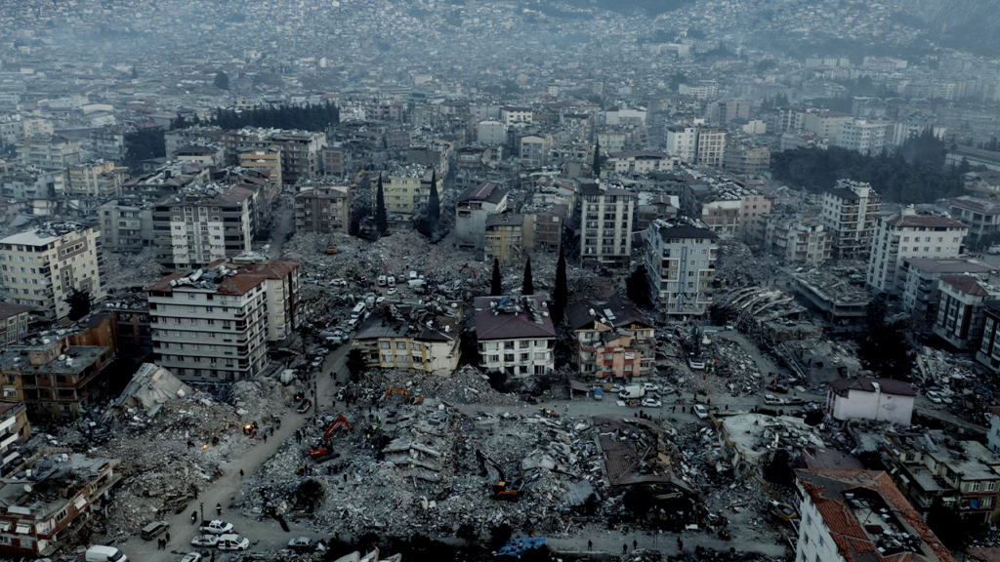